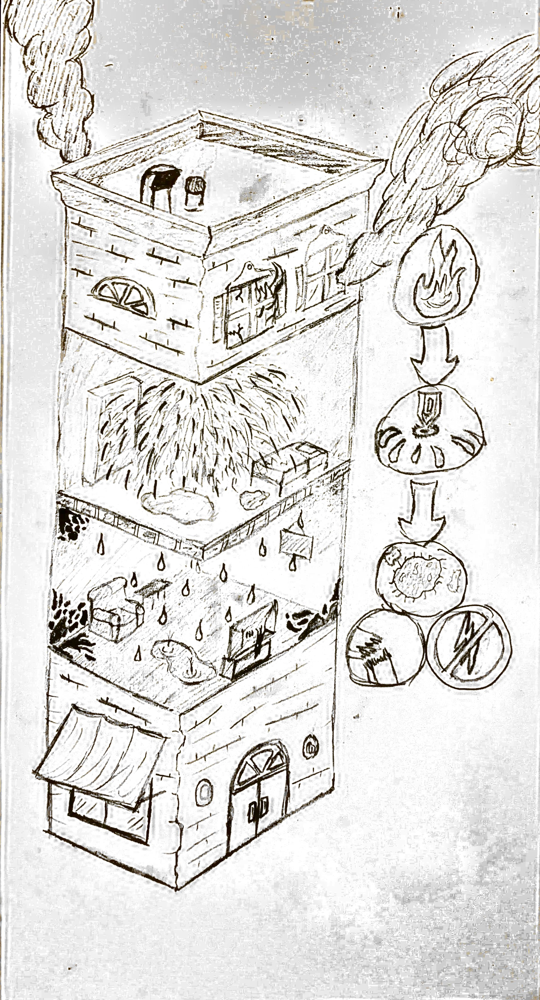
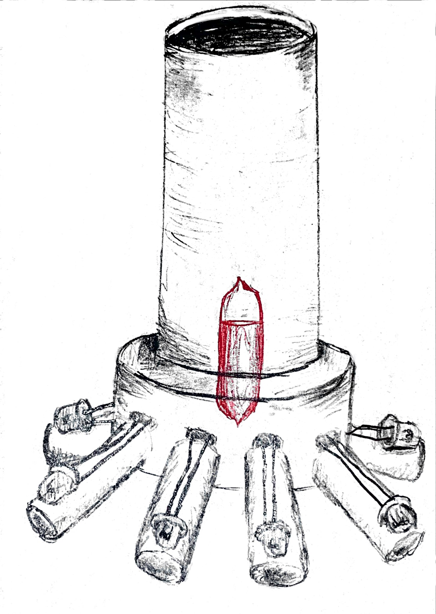
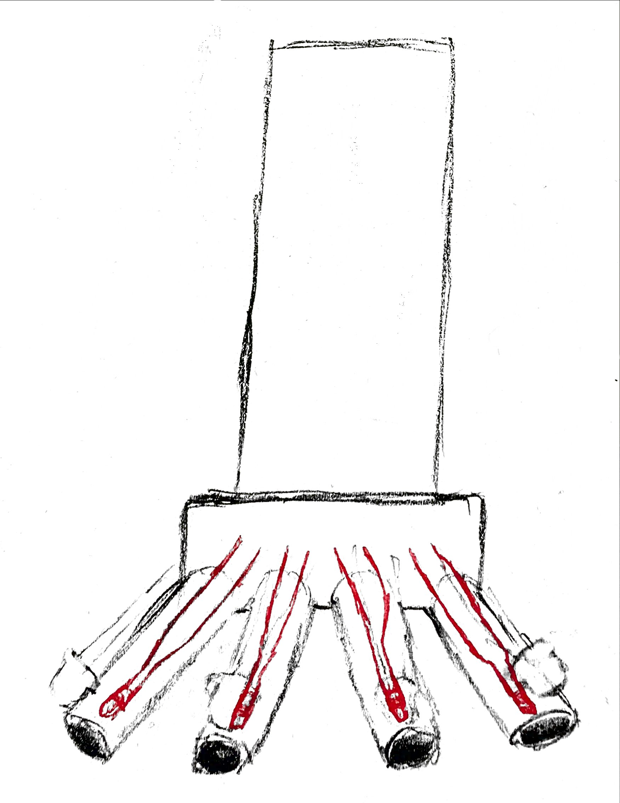
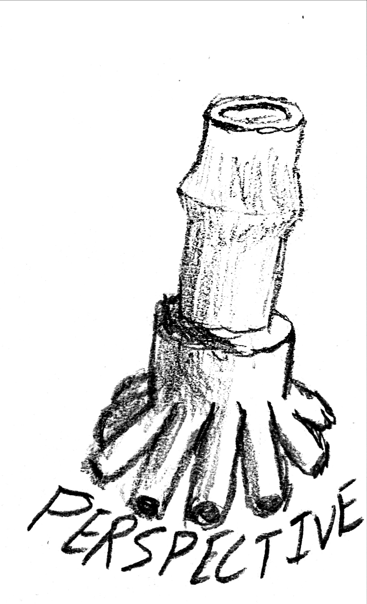
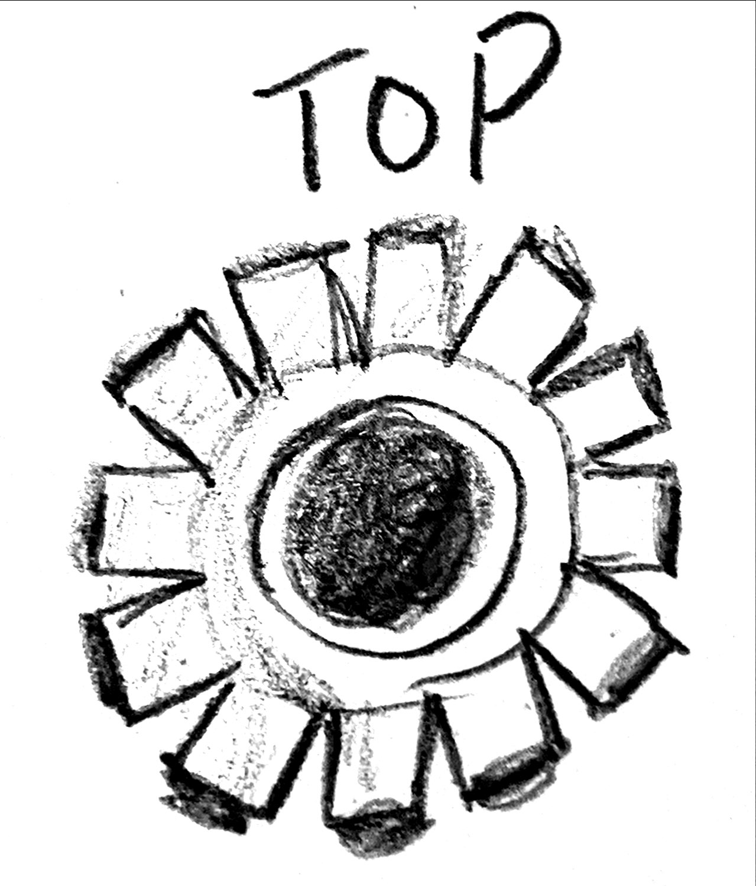
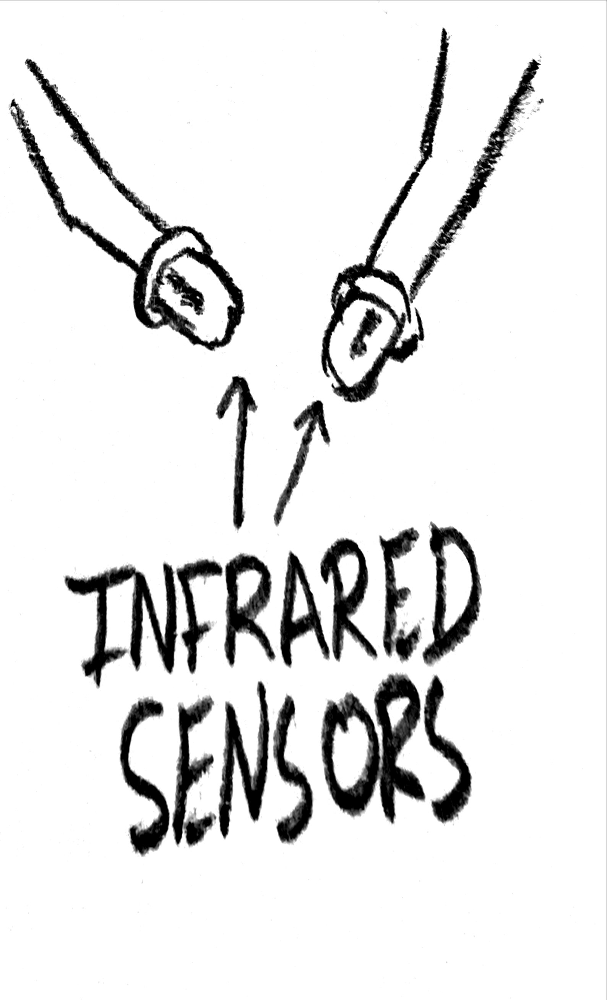

Engineering Technology / Apr 9, 2021
Fire-Seeking Sprinkler
A targeted sprinkler concept designed to direct water only toward the detected flame source — using IR sensors to reduce collateral water damage during residential fires. Placed 2nd at the SkillsUSA Washington State competition.
The problem
Residential sprinkler systems activate indiscriminately — when one head triggers, all heads in a zone release water simultaneously. A kitchen fire on the second floor floods every room below. The water damage often exceeds the fire damage itself.
The question
Could a sprinkler head sense the direction of a fire and open only the outlet pointing toward it — containing water release to the affected zone? The team set out to prototype exactly that.
Approach
After interviewing off-duty firefighters in Kitsap County, the team modeled a radial sprinkler assembly with directional IR sensors, individual conduit channels, and a heat-triggered wax-seal release mechanism — one seal per nozzle, one sensor per quadrant.

The core idea, drawn in one sketch
The concept sketch tells the whole story: fire breaks out on an upper floor, a targeted sprinkler head — not the full system — activates and floods only that floor. The floors below stay dry.
The logic diagram at right shows the detection chain: flame detected → sprinkler head activates → water released toward source → fire suppressed with no electrical trigger needed. The key constraint was passive activation — the system had to work without power.
The wax-seal mechanism answered this: each conduit is plugged by a wax cylinder. The IR sensor for that quadrant triggers a small ignitor coil that melts the wax, opening the water path. No relay, no solenoid, no electricity downstream.

Isometric assembly

Front schematic
The assembled sprinkler: a cylindrical water reservoir on top feeds a central manifold. Four conduit arms radiate outward and downward at equal angles — each terminating in a spray nozzle. In the isometric view, the red highlight marks the central flame sensor and feed channel. In the front schematic, the red lines trace the water paths through each arm. Both views make the radial symmetry explicit: any quadrant can fire independently.

Assembly — perspective

Nozzle pattern — top view

IR sensors
Three component studies: the perspective view shows the manifold body and nozzle-arm geometry from a close-up angle, clarifying how the arms attach and angle downward. The top-down view makes the radial nozzle spacing precise — evenly distributed to ensure equal coverage across the 360° field. The IR sensor study documents the pair used for directional detection: one sensor per quadrant, cross-referenced to trigger only its corresponding conduit seal.
Result
The prototype placed second at the SkillsUSA Washington State Engineering Technology competition in April 2021. The design was recognized for its specificity — the judges noted that few teams had grounded their concept in real failure-mode research (the firefighter interviews shaped the constraint that the activation mechanism had to work without electrical power).
Limitations and next steps
The prototype body was fabricated from cardboard and tubing — adequate for demonstration but not for live water testing. A production-viable version would need a machined or cast manifold, sealed conduit joints, and more precise IR calibration to avoid false positives from indirect heat sources. The wax-seal mechanism is elegant but slow; a reed-valve alternative could provide faster response without sacrificing the no-electricity requirement.